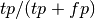

8.17.1.4. sklearn.metrics.precision_score¶
- sklearn.metrics.precision_score(y_true, y_pred, labels=None, pos_label=1, average='weighted')¶
Compute the precision
The precision is the ratio  where tp is the number of true positives and fp the number of false positives. The precision is intuitively the ability of the classifier not to label as positive a sample that is negative.
The best value is 1 and the worst value is 0.
Parameters : y_true : array, shape = [n_samples]
True targets
y_pred : array, shape = [n_samples]
Predicted targets
labels : array
Integer array of labels
pos_label : int
In the binary classification case, give the label of the positive class (default is 1). Everything else but ‘pos_label’ is considered to belong to the negative class. Set to None in the case of multiclass classification.
average : string, [None, ‘micro’, ‘macro’, ‘weighted’(default)]
In the multiclass classification case, this determines the type of averaging performed on the data.
- macro:
Average over classes (does not take imbalance into account).
- micro:
Average over instances (takes imbalance into account). This implies that precision == recall == f1
- weighted:
Average weighted by support (takes imbalance into account). Can result in f1 score that is not between precision and recall.
Returns : precision : float
Precision of the positive class in binary classification or weighted average of the precision of each class for the multiclass task